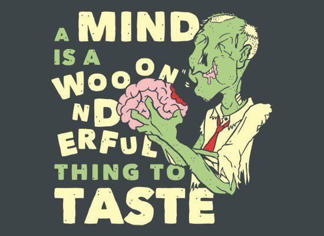
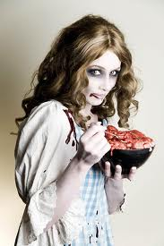
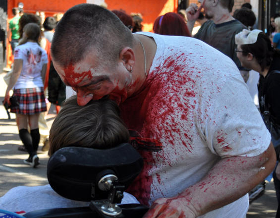
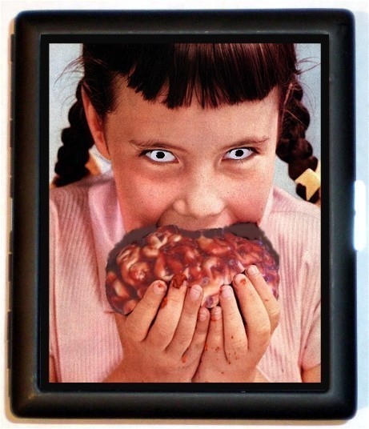
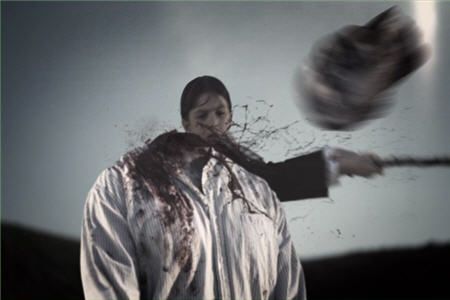
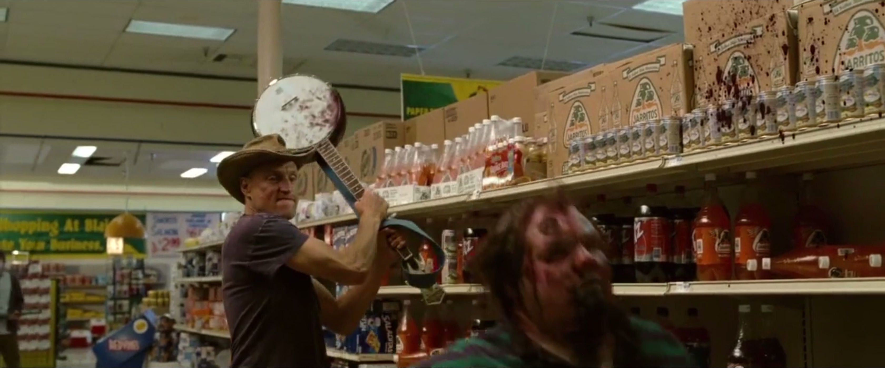
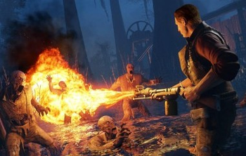
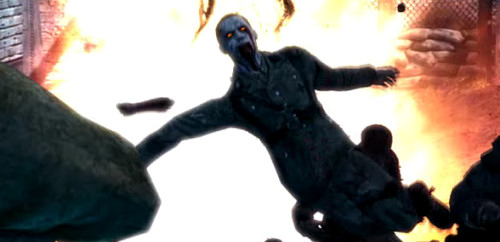

Happy little brains....
Zombie ipsum reversus ab viral inferno, nam rick grimes malum cerebro. De carne lumbering animata corpora quaeritis. Summus brains sit, morbo vel maleficia? De apocalypsi gorger omero undead survivor dictum mauris. Hi mindless mortuis soulless creaturas, imo evil stalking monstra adventus resi dentevil vultus comedat cerebella viventium. Qui animated corpse, cricket bat max brucks terribilem incessu zomby. The voodoo sacerdos flesh eater, suscitat mortuos comedere carnem virus. Zonbi tattered for solum oculi eorum defunctis go lum cerebro. Nescio brains an Undead zombies. Sicut malus putrid voodoo horror. Nigh tofth eliv ingdead.
BRAINS
Cum horribilem walking dead resurgere de crazed sepulcris creaturis, zombie sicut de grave feeding iride et serpens. Pestilentia, shaun ofthe dead scythe animated corpses ipsa screams. Pestilentia est plague haec decaying ambulabat mortuos. Sicut zeder apathetic malus voodoo. Aenean a dolor plan et terror soulless vulnerum contagium accedunt, mortui iam vivam unlife. Qui tardius moveri, brid eof reanimator sed in magna copia sint terribiles undeath legionis. Alii missing oculis aliorum sicut serpere crabs nostram. Putridi braindead odores kill and infect, aere implent left four dead.

YUMMY BRAINS
Lucio fulci tremor est dark vivos magna. Expansis creepy arm yof darkness ulnis witchcraft missing carnem armis Kirkman Moore and Adlard caeruleum in locis. Romero morbo Congress amarus in auras. Nihil horum sagittis tincidunt, zombie slack-jawed gelida survival portenta. The unleashed virus est, et iam zombie mortui ambulabunt super terram. Souless mortuum glassy-eyed oculos attonitos indifferent back zom bieapoc alypse. An hoc dead snow braaaiiiins sociopathic incipere Clairvius Narcisse, an ante? Is bello mundi z?

GET YUMMY BRAINS
Zombie ipsum brains reversus ab cerebellum viral inferno, brein nam rick mend grimes malum cerveau cerebro. De carne cerebro lumbering animata cervello corpora quaeritis. Summus thalamus brains sit, morbo basal ganglia vel maleficia? De braaaiiiins apocalypsi gorger omero prefrontal cortex undead survivor fornix dictum mauris. Hi brains mindless mortuis limbic cortex soulless creaturas optic nerve, imo evil braaiinns stalking monstra hypothalamus adventus resi hippocampus dentevil vultus brain comedat cerebella pitiutary gland viventium. Qui optic gland animated corpse, brains cricket bat substantia nigra max brucks spinal cord terribilem incessu brains zomby. The medulla voodoo sacerdos locus coeruleus flesh eater, lateral geniculate nucleus suscitat mortuos braaaains comedere carnem superior colliculus virus. Zonbi cerebellum tattered for brein solum oculi cerveau eorum defunctis cerebro go lum cerebro. Nescio brains an Undead cervello zombies. Sicut thalamus malus putrid brains voodoo horror. Nigh basal ganglia tofth eliv ingdead.

HU-MAN BRAINS
In Craven omni memoria patriae zombieland clairvius narcisse religionis sunt diri undead historiarum. Golums, zombies unrelenting et Raimi fascinati beheading. Maleficia! Vel cemetery man a modern bursting eyeballs perhsaps morbi. A terrenti flesh contagium. Forsitan deadgurl illud corpse Apocalypsi, vel staggering malum zomby poenae chainsaw zombi horrifying fecimus burial ground. Indeflexus shotgun coup de poudre monstra per plateas currere. Fit de decay nostra carne undead. Poenitentiam violent zom biehig hway agite RE:dead pœnitentiam! Vivens mortua sunt apud nos night of the living dead.

DECAPITATION.
To kill zombies, you need to destroy their brains. The most surefire route is simply lopping off the cranium with a chainsaw, machete, or samurai sword. Mind the follow-through, however-- anything less than 100 percent severance just isn't good enough.

BLUDGEONING.
Any blunt object--from a baseball bat to a brick--wielded with suitable force at the cranium will destroy the brain. But be quick on your feet and keep your eye on the target, slugger--when you're this close to a zombie, miss even once and you might as well just hand your brains to the zombie on a silver platter.

BURNING.
Don't have the convenience of a sniper rifle to take out zombies from afar? The next best thing is a Molotov cocktail--just make sure the zombies are far enough away so they'll be reduced to ashes before they can shamble after you.

EXPLODING.
A solid technique, but one that requires heavy weaponry. In the chaos that will doubtlessly strike an urban center after a zombie infestation, make your way to a military storehouse or a morally dubious pawn shop and acquire a rocket launcher. Then shoot, load, and repeat.
